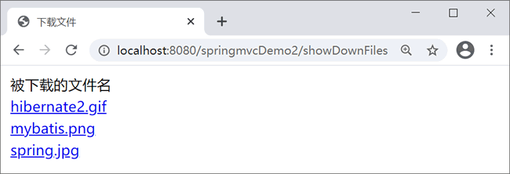

首页 > 编程笔记
Spring MVC文件下载
顾名思义，文件下载就是将服务器中的文件下载到本地，下面主要介绍 Spring MVC 文件下载的实现方法和实现过程。
利用程序编码实现下载需要设置以下两个报头：
该报头指定了接收程序处理数据内容的方式，在 HTTP 应用中只有 attachment 是标准方式，attachment 表示要求用户干预。在 attachment 后面还可以指定 filename 参数，该参数是服务器建议浏览器将实体内容保存到文件中的文件名称。
设置报头的示例如下：
程序编码文件下载可分为两个步骤：
FileDownController 类的代码如下：
单击上图中的超链接即可下载文件。
文件下载的实现方法
文件下载有以下两种实现方法：- 通过超链接实现下载：实现简单，但暴露了下载文件的真实位置，并且只能下载 Web 应用程序所在目录下的文件，WEB-INF 目录除外。
- 利用程序编码实现下载：增强安全访问控制，可以下载除 Web 应用程序所在目录以外的文件，也可以将文件保存到数据库中。
利用程序编码实现下载需要设置以下两个报头：
- Web 服务器需要告诉浏览器其所输出内容的类型不是普通文本文件或 HTML 文件，而是一个要保存到本地的下载文件，这需要设置 Content-Type 的值为 application/x-msdownload。
- Web 服务器希望浏览器不直接处理相应的实体内容，而是由用户选择将相应的实体内容保存到一个文件中，这需要设置 Content-Disposition 报头。
该报头指定了接收程序处理数据内容的方式，在 HTTP 应用中只有 attachment 是标准方式，attachment 表示要求用户干预。在 attachment 后面还可以指定 filename 参数，该参数是服务器建议浏览器将实体内容保存到文件中的文件名称。
设置报头的示例如下：
response.setHeader("Content-Type", "application/x-msdownload");
response.setHeader("Content-Disposition", "attachment;filename="+filename);
程序编码文件下载可分为两个步骤：
- 在客户端使用一个文件下载超链接，链接指向后台下载文件的方法以及文件名。
- 在控制器类中，提供文件下载方法进行下载。
示例
下面继续通过 springMVCDemo2 应用讲述利用程序实现下载的过程，要求从《Spring MVC文件上传》上传文件的目录（workspace\.metadata\.plugins\org.eclipse.wst.server.core\tmp0\wtpwebapps\springMVCDemo2\uploadfiles）中下载文件，具体开发步骤如下。1. 编写控制器类
首先编写控制器类 FileDownController，在该类中有 3 个方法，即 show、down 和 toUTF8String。其中，show 方法获取被下载的文件名称；down 方法执行下载功能；toUTF8String 方法是下载保存时中文文件名的字符编码转换方法。FileDownController 类的代码如下：
package controller;
import java.io.File;
import java.io.FileInputStream;
import java.io.UnsupportedEncodingException;
import java.util.ArrayList;
import javax.servlet.ServletOutputStream;
import javax.servlet.http.HttpServletRequest;
import javax.servlet.http.HttpServletResponse;
import org.apache.commons.logging.Log;
import org.apache.commons.logging.LogFactory;
import org.springframework.stereotype.Controller;
import org.springframework.ui.Model;
import org.springframework.web.bind.annotation.RequestMapping;
import org.springframework.web.bind.annotation.RequestParam;
@Controller
public class FileDownController {
// 得到一个用来记录日志的对象，在打印时标记打印的是哪个类的信息
private static final Log logger = LogFactory
.getLog(FileDownController.class);
/**
* 显示要下载的文件
*/
@RequestMapping("showDownFiles")
public String show(HttpServletRequest request, Model model) {
// 从 workspace\.metadata\.plugins\org.eclipse.wst.server.core\
// tmp0\wtpwebapps\springMVCDemo11\下载
String realpath = request.getServletContext()
.getRealPath("uploadfiles");
File dir = new File(realpath);
File files[] = dir.listFiles();
// 获取该目录下的所有文件名
ArrayList<String> fileName = new ArrayList<String>();
for (int i = 0; i < files.length; i++) {
fileName.add(files[i].getName());
}
model.addAttribute("files", fileName);
return "showDownFiles";
}
/**
* 执行下载
*/
@RequestMapping("down")
public String down(@RequestParam String filename,
HttpServletRequest request, HttpServletResponse response) {
String aFilePath = null; // 要下载的文件路径
FileInputStream in = null; // 输入流
ServletOutputStream out = null; // 输出流
try {
// 从workspace\.metadata\.plugins\org.eclipse.wst.server.core\
// tmp0\wtpwebapps下载
aFilePath = request.getServletContext().getRealPath("uploadfiles");
// 设置下载文件使用的报头
response.setHeader("Content-Type", "application/x-msdownload");
response.setHeader("Content-Disposition", "attachment; filename="
+ toUTF8String(filename));
// 读入文件
in = new FileInputStream(aFilePath + "\\" + filename);
// 得到响应对象的输出流，用于向客户端输出二进制数据
out = response.getOutputStream();
out.flush();
int aRead = 0;
byte b[] = new byte[1024];
while ((aRead = in.read(b)) != -1 & in != null) {
out.write(b, 0, aRead);
}
out.flush();
in.close();
out.close();
} catch (Throwable e) {
e.printStackTrace();
}
logger.info("下载成功");
return null;
}
/**
* 下载保存时中文文件名的字符编码转换方法
*/
public String toUTF8String(String str) {
StringBuffer sb = new StringBuffer();
int len = str.length();
for (int i = 0; i < len; i++) {
// 取出字符中的每个字符
char c = str.charAt(i);
// Unicode码值为0~255时，不做处理
if (c >= 0 && c <= 255) {
sb.append(c);
} else { // 转换 UTF-8 编码
byte b[];
try {
b = Character.toString(c).getBytes("UTF-8");
} catch (UnsupportedEncodingException e) {
e.printStackTrace();
b = null;
}
// 转换为%HH的字符串形式
for (int j = 0; j < b.length; j++) {
int k = b[j];
if (k < 0) {
k &= 255;
}
sb.append("%" + Integer.toHexString(k).toUpperCase());
}
}
}
return sb.toString();
}
}
2. 创建文件列表页面
下载文件示例需要一个显示被下载文件的 JSP 页面 showDownFiles.jsp，代码如下：
<%@ page language="java" contentType="text/html; charset=UTF-8"
pageEncoding="UTF-8"%>
<%@ taglib uri="http://java.sun.com/jsp/jstl/core" prefix="c"%>
<head>
<meta http-equiv="Content-Type" content="text/html; charset=UTF-8">
<title>Insert title here</title>
</head>
<body>
<table>
<tr>
<td>被下载的文件名</td>
</tr>
<!--遍历 model中的 files-->
<c:forEach items="${files}" var="filename">
<tr>
<td>
<a href="${pageContext.request.contextPath }/down?filename=${filename}">${filename}</a>
</td>
</tr>
</c:forEach>
</table>
</body>
</html>
3. 测试下载功能
访问地址：http://localhost:8080/springmvcDemo2/showDownFiles，运行结果如下。

下载文件列表页面
下载文件列表页面
单击上图中的超链接即可下载文件。
关注公众号「站长严长生」，在手机上阅读所有教程，随时随地都能学习。内含一款搜索神器，免费下载全网书籍和视频。

微信扫码关注公众号